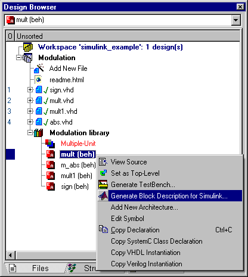
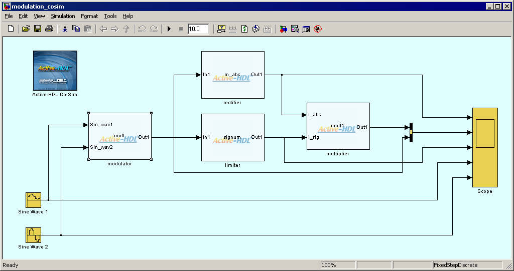
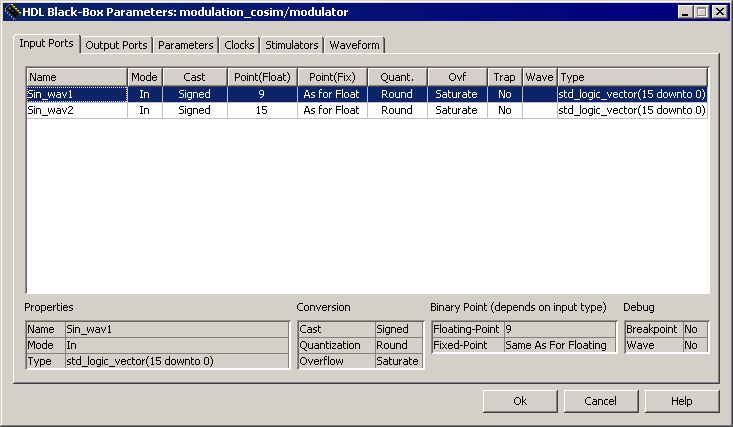
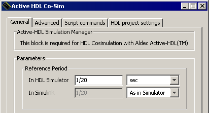

SIMULINK_EXAMPLE is very simple DSP design using several components written in VHDL to demonstrate the use of Active-HDL Co-Simulation Interface to Simulink®.
MATLAB® and Simulink® software can be downloaded from the MathWorks website at www.mathworks.com.
The design contains the following resource files:
To start co-simulation of this design in Simulink, we need to use Active-HDL to create files describing our HDL components in Simulink diagram.
First, compile all design files. Next, use the Generate Block Description for Simulink option from the pop-up menu for each of modules compiled to the design library (Figure 1). Confirm the default file names and locations by pressing OK in the Save As dialog box. Next, use option Generate Block Description for Simulink (Figure 1) for each of top-level modules. Confirm default filename and location pressing OK on appearing Save As dialog.

Figure 1. Generating the block description file for co-simulation in Simulink
Alternatively, you can use the compile.do macro.
Once the block description files are created for all modules mentioned above, invoke MATLAB. If you use the co-simulation interface for the first time, browse to the $ALDEC/Simulink folder and type the setup command. (The $ALDEC variable points to the Active-HDL installation folder; you can examine its value using the set command in
Open the $WSP/Simulink/modulation_cosim.mdl file in the Simulink environment. Make sure that the $WSP/Simulink folder is either set as the current folder or added to the MATLAB search path.
The model contains the Active-HDL Co-Sim block on the top-level diagram, and four HDL Black-Boxes (Figure 2). The name displayed in the middle of the HDL Black-Box symbol corresponds to the configuration filename. By default, it is the name of the entity/module, unless you change it with the Generate Block Description for Simulink option. The HDL Black-Boxes are distinguished graphically with the Active-HDL logo.

Figure 2. The Simulink model window
Now, you can simply start simulation and observe the results on the Simulink scopes.
Double-click on one of the HDL Black-Boxes. The HDL Black-Box Parameters dialog box (Figure 3.) allows you to control data transfer conditions and check properties of every port. Some of main properties are listed below.
Please refer to the on-line documentation for detailed information on remaining dialog box options.

Figure 3. HDL Black-Box Parameters dialog box (Input Ports tab)
Most of HDL simulators, including Active-HDL, use an event-driven simulation methodology, while Simulink performs cycle-based simulation. This implies a major consequence: data can be exchanged between the two domains only at scheduled time steps. It means that none of HDL Black-Boxes can be evaluated and no data transfer occurs between time points resulting from the specified sampling period. The fixed-step discrete solver also needs to be used in Simulink to provide correct co-simulation results.
The sampling period and the relationship between Active-HDL and Simulink time domains is defined in the

Figure 4: Reference Period Settings
The Reference Period section defines base sampling rate for all HDL Black-Boxes. The HDL Black-Box Parameters dialog box allows setting the following timing parameters of an individual HDL Black-Box:
NOTE: Be aware of the round-off error when specifying a period by using frequency units. The fractional part of the resulting period will be rounded to three digits.
Open the Block Parameters dialog box of the Active-HDL Co-Sim block to verify that the Reference Period is set to 1/20 sec and timescales in both Simulink and Active-HDL are equal.
For further information on the Active-HDL Co-Simulation Interface to Simulink, refer to the Active-HDL on-line documentation.